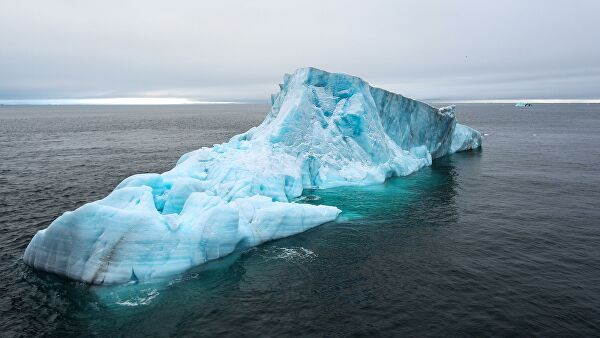

Северный Ледовитый океан
Северный Ледовитый океан
Се́верный Ледови́тый океа́н — наименьший по площади и глубине океан Земли, расположенный полностью в северном полушарии, между Евразией и Северной Америкой.
Площадь океана составляет 14,75 млн км², объём воды — 18,07 млн км³. Средняя глубина — 1225 м, наибольшая глубина — 5527 м в Гренландском море. Большую часть рельефа дна Северного Ледовитого океана занимают шельф (более 45 % дна океана) и подводные окраины материков (до 70 % площади дна). Океан принято делить на три обширные акватории: Арктический бассейн, Северо-Европейский бассейн и Канадский бассейн. Благодаря полярному географическому положению ледяной покров в центральной части океана сохраняется в течение всего года, хотя и находится в подвижном состоянии.
К Северному Ледовитому океану примыкают территории Дании (Гренландия), Исландии, Канады, Норвегии, России и Соединённых Штатов Америки. Правовой статус океана на международном уровне прямо не регламентирован. Фрагментарно он определяется национальными законодательствами арктических стран и международно-правовыми соглашениями. В течение большей части года Северный Ледовитый океан используется для морских перевозок, которые осуществляются Россией по Северному морскому пути, США и Канадой по Северо-Западному проходу.